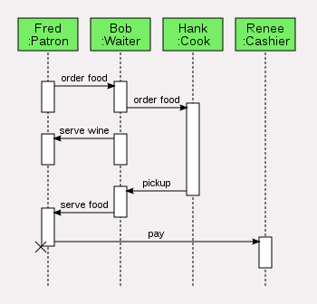
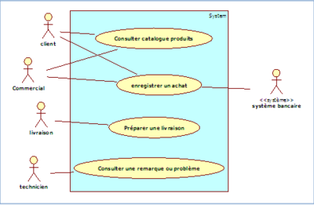
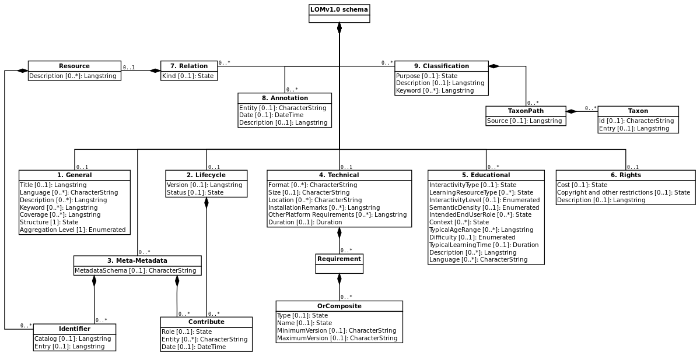

Diagramme de séquence
Un diagramme de séquence est un type de diagramme UML qui montre comment une opération. Ce diagramme se concentre sur le temps car il affiche l’ordre d’interaction graphiquement via l’axe vertical pour représenter le temps.
Diagramme de cas d’utilisation
Le diagramme de cas d’utilisation dans UML est une sorte de diagramme qui utilise des acteurs et des cas d’utilisation pour décrire les fonctionnalités du système. Les actions, services et fonctions que le système doit exécuter sont ce que vous avez appelé les «cas d’utilisation». Alors que les entités qui opèrent sous des rôles spécifiques trouvés dans le système sont les «acteurs». Et le «système» est celui qui est en cours de développement.
Diagramme d’activité
Ce type de diagramme présente une présentation visuelle d’une série d’actions ou d’un flux de contrôle dans un certain système qui est identique à un organigramme ou un diagramme de flux de données. Le diagramme d’activité a généralement un début ou «l’état initial» et une fin qui est l’état final ».

Diagramme de déploiement
Le prochain exemple UML est le diagramme de déploiement. Ce type de diagramme montre la disposition physique des artefacts sur les nœuds. Les diagrammes de déploiement sont considérés comme pertinents dans le cas où votre solution logicielle est distribuée sur différentes machines, chacune ayant une configuration distincte.

Diagramme de classe
Ce type d’exemples de diagrammes UML est souvent appelé le fondement principal de toute solution orientée objet. Son utilisation est pour la modélisation conceptuelle de la structure réelle du système et la modélisation détaillée. Il est également possible avec les diagrammes de classes de faire de la modélisation des données. Dans ce diagramme, les classes sont divisées en trois compartiments contenus dans une boîte. Le nom doit être en haut, suivi des attributs au milieu et des opérations en bas.
